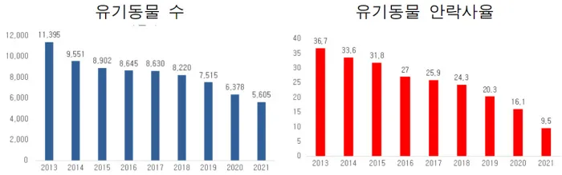

home
| 회원가입 |
로그인 |


오시는길 :
"유기동물이 안락사가 아닌 포근한 새 가족의 품에 안길수 있도록 힘쓰겠습니다."
당신의 반려견 찾기 여정을 위한 입양사이트를 소개합니다!
반려견을 찾는 여정, 한 발짝 더 나아가세요! 반려견은 우리 삶에 빛을 더해주는 가장 충실한 친구입니다. 그리고 그 특별한 친구를 찾는 여정은 때로는 어려울 수 있습니다. 그러나 지금, 당신의 반려견을 찾는 여정을 편안하고 기쁨 가득한 경험으로 바꿔줄 입양사이트가 있습니다.
Mementum 입양센터의 장점:
다양한 종류와 크기의 반려견: 작은 크기부터 대형까지, 다양한 종류의 반려견을 만나보세요.
각각의 개성 넘치는 반려견이 여러분을 기다리고 있습니다.
건강한 반려견 보장: 모든 입양 가능한 반려견은 정기적으로 건강검진을 받고, 필요한 예방접종을 완료했습니다. 건강한 친구를 만나보세요!
사랑과 배려로 운영되는 보호소와 협업: 우리는 보호소와 긴밀히 협력하여 유기견들에게 새로운 가족을 찾아주고 있습니다. 당신의 입양은 더 큰 변화를 만들어냅니다.
사후관리 및 지원: 반려견을 입양한 후에도 우리는 여러분과 함께합니다. 궁금한 점이 있거나 도움이 필요할 때 언제든지 연락주세요. 입양의 의미를 더욱 특별하게 만들어보세요.
당신의 다음 반려견이 여기에서 기다리고 있습니다. 함께 당신의 삶에 빛을 더해줄 특별한 친구를 찾아보세요!
당신의 반려견 찾기 여정을 위한 입양사이트를 소개합니다!
반려견을 찾는 여정, 한 발짝 더 나아가세요! 반려견은 우리 삶에 빛을 더해주는 가장 충실한 친구입니다. 그리고 그 특별한 친구를 찾는 여정은 때로는 어려울 수 있습니다. 그러나 지금, 당신의 반려견을 찾는 여정을 편안하고 기쁨 가득한 경험으로 바꿔줄 입양사이트가 있습니다.
Mementum 입양센터의 장점:
다양한 종류와 크기의 반려견: 작은 크기부터 대형까지, 다양한 종류의 반려견을 만나보세요.
각각의 개성 넘치는 반려견이 여러분을 기다리고 있습니다.
건강한 반려견 보장: 모든 입양 가능한 반려견은 정기적으로 건강검진을 받고, 필요한 예방접종을 완료했습니다. 건강한 친구를 만나보세요!
사랑과 배려로 운영되는 보호소와 협업: 우리는 보호소와 긴밀히 협력하여 유기견들에게 새로운 가족을 찾아주고 있습니다. 당신의 입양은 더 큰 변화를 만들어냅니다.
사후관리 및 지원: 반려견을 입양한 후에도 우리는 여러분과 함께합니다. 궁금한 점이 있거나 도움이 필요할 때 언제든지 연락주세요. 입양의 의미를 더욱 특별하게 만들어보세요.
당신의 다음 반려견이 여기에서 기다리고 있습니다. 함께 당신의 삶에 빛을 더해줄 특별한 친구를 찾아보세요!
광고 항목입니다.
team MOMENTRUM을 후원해 주세요